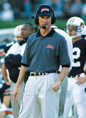

Today in Jordan-HareAuburn vs. Wyoming
New Digs for The Tigers As the 2000 season begins on the Plains and we embark on a new century of Auburn football, there are several changes to the Tigers' home, Jordan-Hare Stadium. The host to nearly 275 games since it was first built in 1939, Jordan-Hare underwent some cosmetic changes since last season and received one major change few can see unless perched below the stands of the 60-year old stadium. In need of renovation and thanks to private donations, the Auburn locker rooms in Jordan-Hare Stadium were reconstructed. Originally built in 1963 and last renovated in 1970, the once 1,300 square foot locker room is now a spacious 3,223 square feet. Not only will the players benefit from the changes—but numerous others will as well. Physicians and trainers will have ample room to administer several players at once. The media will have a brand new room for post-game press conferences. Photographers will even have their own dark room to process film. The signature piece to the locker room is an AU logo centered in the carpet with a large AU logo hanging directly overhead. The Auburn seniors have started a tradition that will begin tonight. Out of respect to the school, no one will be allowed to walk on the carpeted AU logo on the floor. Even the visitors will have a first-class dressing room this season. Formerly located in the south end zone, the new home to visitors will be in the north end zone, complete with training room, coaches' locker room and a media room. The most visible change to fans at Jordan-Hare will be the addition of a tunnel centered in the south end zone. Instead of entering and exiting the stadium from the southwest corner as was done in previous years, the Tigers will now use the new entrance to enter and leave the stadium. Currently under construction, the second phase of the locker room project will include a recruiting lounge and coaches' locker room. Growing Jordan-Hare Jordan-Hare Stadium will hold nearly 400 more people, increasing the capacity from 85,214 to 85,612. While seats were removed with the addition of the tunnel in the south end zone, seats were added near the old tunnel in the southwest corner. An additional row of seats were also added to the top of the north end zone. With a capacity of 85,612, Jordan-Hare Stadium now becomes the sixth largest on-campus facility, surpassing Stanford's 85,500-seat Stanford Stadium in Palo Alto, Calif. Auburn and The Cowboys Tonight's opener against the Wyoming Cowboys marks the first meeting between the two universities. Although this is the inaugural game of the two programs, there is one person that connects the two schools together—Coach Pat Dye. By now, most people know that the former Auburn coach was Wyoming's head coach in 1980 prior to his 12-year career with the Tigers. Dye posted a 6-5 mark during his brief stint in Laramie. One of Dye's five losses came to New Mexico, 24-21. One of the Lobo's graduate assistants that day was current Auburn offensive coordinator Noel Mazzone. Auburn's opener with Wyoming marks the second time in school history that the Tigers have played a school nicknamed the Cowboys. Auburn defeated the Hardin-Simmons Cowboys, 35-12, on Oct. 3, 1959, in the Tigers' home opener in then Cliff Hare Stadium. What was so significant about the Hardin-Simmons game in 1959? It marked the birth of Aubie, Auburn's popular mascot. Aubie's existence began as a cartoon character that appeared on the game program that day in 1959. Birmingham Post-Herald artist Phil Neel created the cartoon Tiger who continued to adorn Auburn program covers for 18 years. Thursday Nights There is some, but little historical significance about playing on a Thursday night. Auburn has played just five Thursday night games in its history with all of those games coming in the 1990's. Two of those came in the last three years. The Tigers and Virginia swapped home sites in back-to-back Thursday night openers in 1997 and 1998. Auburn won in Charlottesville in '97, while the Cavaliers returned the favor at Auburn in '98. The most remembered Thursday night game in school history wasn't played until two days later on Saturday. ESPN was slated to televise the Tigers 1995 game against Mississippi State, however Hurricane Opal ripped through Lee County on the Wednesday before the game, causing the contest to be moved to Saturday due to massive power failures throughout the region. In August This evening's game is the fourth game in Auburn's history that has been played during the month of August. The Tigers are 2-1 in August with this being the second earliest beginning to a season. The 1984 Kickoff Classic was played on August 28th, with Auburn's 1991 and 1996 August games also being contested on August 31st. Early beginnings not only hold true to the football field, but to the classroom as well. For the first time in over 50 years, Auburn University has switched to the semester system instead of the quarter system used in previous years. The fall semester at Auburn began on Tuesday, August 22nd. Tiger Tidbits Tommy Tuberville is 16-0 as a head coach versus non-conference opponents ... Tuberville is 4-1 in season openers, including a 1-0 mark in openers at Auburn ... Auburn has won 25 of the last games dating back to 1991 ... Auburn has an 83-22-2 record in season-opening games, winning 12 of its last 14 season openers ... Auburn has won 14 of the last 15 season openers played in Jordan-Hare Stadium dating back to 1976 ... Overall, the Tigers are 40-4-1 when kicking off the season at home ... The Tigers are 22-18-2 all-time on ESPN.
AUBURN (0-0, 0-0 SEC)
Head Coach: Tommy Tuberville (Southern Arkansas, 1976)
AU Record: 5-6 (second season)
Career Record: 30-26 (sixth season)
Aug. 31 Wyoming
Sept. 9 at Ole Miss
Sept. 16 LSU
Sept. 23 Northern Illinois
Sept. 3 Vanderbilt
Oct. 7 at Mississippi State
Oct. 14 at Florida
Oct. 21 Louisiana Tech (HC)
Oct. 28 Arkansas
Nov. 11 Georgia
Nov. 18 at Alabama
Auburn Returning Stat Leaders
Rushing Att. Yds. Avg. TD
Heath Evans 93 330 3.5 2
Clifton Robinson 91 227 2.5 1
Michael Owens 20 49 2.5 0
Passing Yards Att. Comp. Yds. TD
Ben Leard 157 111 1,423 12
Jeff Klein 169 85 1,038 6
Receiving No. Yds. Avg. TD
Ronney Daniels 56 1,068 19.1 9
Reggie Worthy 23 270 11.7 1
Travaris Robinson 18 174 9.7 1
Tackles Total Solo Asst. Sacks
Alex Lincoln 92 45 47 1.5
Rodney Crayton 66 47 19 1.0
Rob Pate 59 39 20 1.5
WYOMING (0-0)
Head Coach: Vic Koenning (Kansas State, 1983)
UW Record: 0-0 (first season)
Career Record: 0-0 (first season)
Aug. 31 at Auburn
Sept. 9 at Texas A&M
Sept. 16 Central Michigan
Sept. 23 Nevada
Sept. 30 at New Mexico
Oct. 7 San Diego State
Oct. 14 Air Force
Oct. 21 at UNLV
Nov. 26 at Brigham Young
Nov. 11 Utah
Nov. 16 at Colorado State
Wyoming Returning Stat Leaders
Rushing Att. Yds. Avg. TD
Brock Ralph 11 83 7.5 2
Nate Scott 7 45 6.4 0
Arien Smith 10 39 3.9 0
Passing Yards Att. Comp. Yds. TD
Jay Stoner 222 135 1,859 8
Matt Swanson 127 71 886 6
Receiving No. Yds. Avg. TD
Brock Ralph 8 57 7.1 0
Nate Scott 3 23 7.7 0
Arlen Smith 2 28 14.0 0
Tackles Total Solo Asst. Sacks
Patrick Chukwurah 90 51 39 9.0
Al Rich 75 53 22 0.0
Adrian Hill 45 20 25 1.0
© 1999 Auburn Network, Inc. |